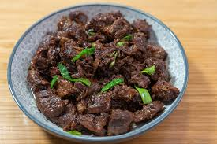

Beef Recipe

Tender Braised Beef Recipe
This tender braised beef recipe features juicy beef chunks slow-cooked in a rich,
savory sauce. Flavored with soy sauce, garlic, and onions, it’s a comforting,
hearty dish perfect for family meals. Serve it over rice, mashed potatoes,
or noodles for a satisfying and flavorful main course.
Ingredients
- 2 lbs beef chuck or stew meat, cut into chunks
- 2 tablespoons vegetable oil
- 1 large onion, chopped
- 4 garlic cloves, minced
- 2 tablespoons soy sauce
- 1 tablespoon oyster sauce
- 1 tablespoon brown sugar
- 1 teaspoon ground black pepper
- 1 cup beef broth or water
- 2 tablespoons cornstarch (optional, for thickening)
- Chopped green onions (for garnish)
Steps
- Heat oil in a large pot over medium-high heat. Brown beef chunks on all sides. Remove and set aside.
- In the same pot, sauté chopped onions until translucent. Add garlic and cook for 1 minute.
- Return beef to the pot. Stir in soy sauce, oyster sauce, brown sugar, and black pepper.
- Pour in beef broth or water. Bring to a boil, reduce heat, cover, and simmer for 1.5 to 2 hours or until beef is tender.
- (Optional) Mix cornstarch with a little water and stir into the sauce. Cook until thickened.
- Garnish with chopped green onions and serve hot.
Home